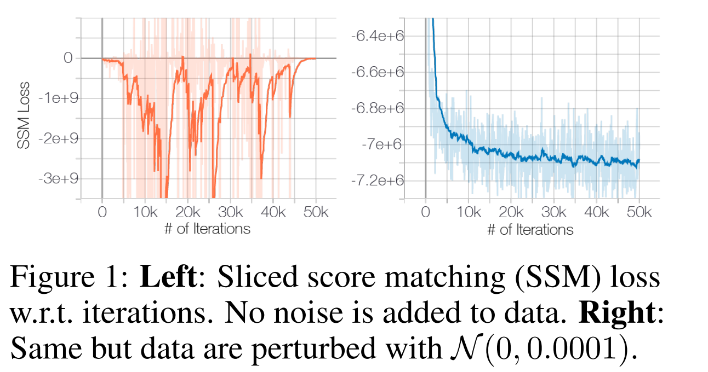
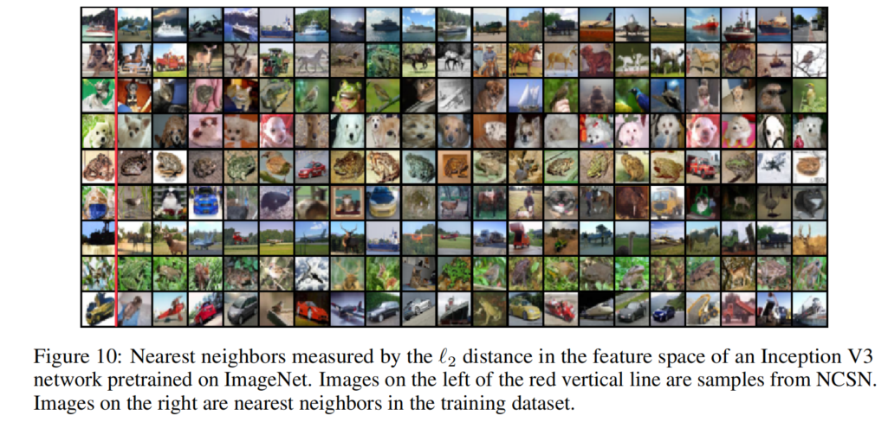

Generative Modeling by Estimating Gradients of the Data Distribution
全文翻译
摘要
我们提出了一种新的生成模型，该模型通过朗之万动力学（Langevin dynamics）来生成样本，所使用的梯度是通过分数匹配（score matching估计的数据分布梯度。由于当数据位于低维流形上时，梯度可能定义不明确且难以估计，因此我们用不同程度的高斯噪声对数据进行扰动，并联合估计相应的分数，即所有噪声水平下扰动数据分布的梯度向量场。在采样时，我们提出了一种退火朗之万动力学方法，在采样过程接近数据流形时，使用对应逐渐降低噪声水平的梯度。我们的框架允许灵活的模型架构，在训练过程中无需采样或使用对抗方法，并且提供了一个可用于原则性模型比较的学习目标。我们的模型在MNIST、CelebA和CIFAR - 10数据集上生成的样本可与生成对抗网络（GANs）相媲美，在CIFAR - 10数据集上达到了8.87的新最先进的初始得分（inception score）。此外，我们通过图像修复实验证明了我们的模型能够学习到有效的表示。
1 引言
生成模型在机器学习领域应用广泛。例如，它们被用于生成高保真图像[26, 6]、合成逼真的语音和音乐片段[58]、提升半监督学习的性能[28, 10]、检测对抗样本及其他异常数据[54]、进行模仿学习[22]，以及在强化学习中探索有前景的状态[41]。近期该领域的进展主要得益于两种方法：基于似然的方法[17, 29, 11, 60]和生成对抗网络（GAN [15]）。前者以对数似然（或合适的替代物）作为训练目标，而后者则通过对抗训练来最小化模型分布与数据分布之间的f - 散度[40]或积分概率度量[2, 55]。
尽管基于似然的模型和GAN取得了巨大成功，但它们存在一些固有缺陷。比如，基于似然的模型要么需采用特定架构构建归一化概率模型（如自回归模型、流模型），要么使用替代损失（如变分自编码器[29]中使用的证据下界、基于能量的模型[21]中的对比散度）进行训练。GAN虽避免了基于似然模型的部分局限，但其对抗训练过程可能导致训练不稳定。此外，GAN的目标函数并不适用于评估和比较不同的GAN模型。虽然存在其他生成建模目标，如噪声对比估计[19]和最小概率流[50]，但这些方法通常仅适用于低维数据。
在本文中，我们探索一种基于估计对数数据密度的（斯坦因）分数[33]并从中采样的新型生成建模原理，分数即对数密度函数在输入数据点处的梯度。这是一个指向对数数据密度增长最快方向的向量场。我们使用通过分数匹配[24]训练的神经网络，从数据中学习这个向量场。然后，我们利用朗之万动力学生成样本，其大致原理是将一个随机初始样本沿着（估计的）分数向量场逐渐移动到高密度区域。然而，这种方法面临两个主要挑战。第一，如果数据分布支撑在低维流形上（许多现实世界的数据集通常如此假设），那么在环境空间中分数将无定义，分数匹配也无法提供一致的分数估计。第二，在数据低密度区域（如远离流形的区域），训练数据稀缺，这不仅妨碍分数估计的准确性，还会减缓朗之万动力学采样的混合速度。由于朗之万动力学通常在数据分布的低密度区域初始化，这些区域中不准确的分数估计会对采样过程产生负面影响。此外，由于需要穿越低密度区域以在分布的不同模态之间转换，混合可能会很困难。
为应对这两个挑战，我们提议用不同幅度的随机高斯噪声对数据进行扰动。添加随机噪声可确保所得分布不会坍缩到低维流形上。较大的噪声水平会在原始（未扰动）数据分布的低密度区域生成样本，从而改善分数估计。关键在于，我们训练一个基于噪声水平的单一分数网络，并估计所有噪声幅度下的分数。然后，我们提出一种退火版本的朗之万动力学，最初使用对应最高噪声水平的分数，之后逐渐降低噪声水平，直至其小到与原始数据分布难以区分。我们的采样策略受模拟退火[30, 37]启发，模拟退火通过启发式方法改进了多模态环境下的优化过程。
我们的方法具有诸多优点。其一，几乎对于分数网络的所有参数化，我们的目标函数都是易于处理的，无需特殊约束或架构，且在训练过程中无需对抗训练、蒙特卡罗采样（MCMC sampling）或其他近似方法。该目标函数还可用于在同一数据集上对不同模型进行定量比较。实验中，我们在MNIST、CelebA [34]和CIFAR - 10 [31]数据集上验证了方法的有效性。结果表明，生成的样本与现代基于似然的模型和GAN生成的样本质量相当。在CIFAR - 10数据集上，我们的模型在无条件生成模型中创造了8.87的新最先进初始得分，并取得了25.32的FID分数，极具竞争力。我们通过图像修复实验证明，该模型能够学习到有意义的数据表示。
2 基于分数的生成建模
假设我们的数据集由来自未知数据分布 $p_{data}(x)$ 的独立同分布样本 $\{x_{i} \in \mathbb{R}^{D}\}_{i = 1}^{N}$ 组成。我们将概率密度 $p(x)$ 的分数定义为 $\nabla_{x} \log p(x)$。分数网络 $s_{\theta}: \mathbb{R}^{D} \to \mathbb{R}^{D}$ 是一个由 $\theta$ 参数化的神经网络，其训练目标是逼近 $p_{data}(x)$ 的分数。生成建模的目标是利用数据集学习一个模型，以从 $p_{data}(x)$ 中生成新样本。基于分数的生成建模框架包含两个要素：分数匹配和朗之万动力学。
2.1 用于分数估计的分数匹配
分数匹配 [24] 最初是为基于来自未知数据分布的独立同分布样本学习非归一化统计模型而设计的。遵循 [53]，我们将其重新用于分数估计。通过分数匹配，我们可以直接训练分数网络 $s_{\theta}(x)$ 来估计 $\nabla_{x} \log p_{data}(x)$，而无需先训练一个模型来估计 $p_{data}(x)$。与分数匹配的典型用法不同，我们选择不使用基于能量模型的梯度作为分数网络，以避免因高阶梯度带来的额外计算量。其目标是最小化 $\frac{1}{2} \mathbb{E}_{p_{data}}[|s_{\theta}(x) - \nabla_{x} \log p_{data}(x)|_{2}^{2}]$，在一个常数范围内，它等价于下式：
其中 $\nabla_{x} s_{\theta}(x)$ 表示 $s_{\theta}(x)$ 的雅可比矩阵。如 [53] 所示，在某些正则条件下，公式 (1) 的极小值点（记为 ）几乎必然满足 。在实践中，公式 (1) 中关于 $p_{data}(x)$ 的期望可以使用数据样本快速估计。然而，由于 $tr(\nabla_{x} s_{\theta}(x))$ 的计算问题，分数匹配在应用于深度网络和高维数据时可扩展性较差 [53]。下面我们讨论两种用于大规模分数匹配的常用方法。
- 去噪分数匹配：去噪分数匹配 [61] 是分数匹配的一种变体，它完全规避了 $tr(\nabla_{x} s_{\theta}(x))$ 的计算。它首先用预先指定的噪声分布 $q_{\sigma}(\overline{x} | x)$ 对数据点 $x$ 进行扰动，然后采用分数匹配来估计扰动后数据分布 $q_{\sigma}(\tilde{x}) \triangleq \int q_{\sigma}(\tilde{x} | x) p_{data}(x) dx$ 的分数。该目标已被证明等价于下式：如 [61] 所示，使公式 (2) 最小化的最优分数网络（记为 ）几乎必然满足 。然而，只有当噪声足够小，使得 时， 才成立。
- 切片分数匹配：切片分数匹配 [53] 使用随机投影来近似分数匹配中的 $tr(\nabla_{x} s_{\theta}(x))$。其目标为：其中 $p_{V}$ 是一个简单的随机向量分布，例如多元标准正态分布。如 [53] 所示，$v^{\top} \nabla_{x} s_{\theta}(x) v$ 这一项可以通过前向模式自动微分高效计算。与去噪分数匹配估计扰动数据的分数不同，切片分数匹配为原始未扰动数据分布提供分数估计，但由于前向模式自动微分，其计算量大约是去噪分数匹配的四倍。
2.2 用朗之万动力学采样
朗之万动力学仅使用分数函数 $\nabla_{x} \log p(x)$ 就能从概率密度 $p(x)$ 中生成样本。给定固定步长 $\epsilon > 0$，以及初始值 $\tilde{x}_{0} \sim \pi(x)$（其中 $\pi$ 是一个先验分布），朗之万方法通过递归计算下式：
其中 $z_{t} \sim N(0, I)$。在某些正则条件下 [62]，当 $\epsilon \to 0$ 且 $T \to \infty$ 时，$\overline{x}_{T}$ 的分布等于 $p(x)$，此时 $\overline{x}_{T}$ 成为来自 $p(x)$ 的精确样本。当 $\epsilon > 0$ 且 $T < \infty$ 时，需要使用 Metropolis - Hastings 更新来修正公式 (4) 中的误差，但在实践中该误差通常可以忽略 [9, 12, 39]。在本文中，我们假设当 $\epsilon$ 较小且 $T$ 较大时，该误差可忽略不计。注意，从公式 (4) 中采样仅需要分数函数 $\nabla_{x} \log p(x)$。因此，为了从 $p_{data}(x)$ 中获取样本，我们可以先训练分数网络，使得 $s_{\theta}(x) \approx \nabla_{x} \log p_{data}(x)$，然后利用朗之万动力学，借助 $s_{\theta}(x)$ 近似获得样本。这就是我们基于分数的生成建模框架的核心思想。
3 基于分数的生成式建模所面临的挑战
在本节中，我们将更深入地分析基于分数的生成式建模这一思路。我们认为，有两个主要障碍阻碍了这一思路的直接应用。
3.1 流形假设
流形假设指出，现实世界中的数据往往集中在嵌入高维空间（也称为环境空间）的低维流形上。这一假设在许多数据集上都得到了实证支持，并已成为流形学习的基础 。在流形假设下，基于分数的生成式模型将面临两个关键难题。首先，由于分数$\nabla_{x} \log p_{data }(x)$是在环境空间中求取的梯度，当$x$被限制在低维流形上时，它是没有定义的。其次，分数匹配目标公式（1）只有在数据分布的支撑集是整个空间时，才能提供一致的分数估计量（参见文献[24]中的定理2），而当数据位于低维流形上时，该估计量将是不一致的。
|  |
|---|
| 图1：左图：切片分数匹配（SSM）损失随迭代次数的变化。数据未添加噪声。右图：相同情况，但数据添加了$N(0,0.0001)$的噪声 |
流形假设对分数估计的负面影响可以从图1中清楚地看出，在图1中我们训练了一个ResNet（附录B.1中有详细信息）来估计CIFAR-10上的数据分数。为了快速训练并准确估计数据分数，我们使用了切片分数匹配目标（公式（3））。如图1左图所示，在原始CIFAR-10图像上进行训练时，切片分数匹配损失先是下降，然后不规则地波动。相比之下，如果我们用少量高斯噪声扰动数据（使得扰动后的数据分布在$R^{D}$上具有完全支撑集），损失曲线将会收敛（右图）。请注意，对于像素值在[0, 1]范围内的图像，我们添加的高斯噪声$N(0,0.0001)$非常小，人眼几乎无法分辨。
3.2 低数据密度区域
低数据密度区域的数据稀缺性会给基于分数匹配的分数估计和基于朗之万动力学的MCMC采样都带来困难。
3.2.1 分数匹配中不准确的分数估计
在低数据密度区域，由于缺乏数据样本，分数匹配可能没有足够的依据来准确估计分数函数。从2.1节可知，分数匹配旨在最小化分数估计的期望平方误差，即$\frac{1}{2} \mathbb{E}_{p_{data }}[\left|s_{\theta}(x)-\nabla_{x} \log p_{data }(x)\right|_{2}^{2}]$ 。在实际操作中，关于数据分布的期望总是使用独立同分布样本$\{x_{i}\}_{i = 1}^{N} \stackrel{ i.i.d. }{\sim} p_{data }(x)$来估计。考虑任何区域$R \subset \mathbb{R}^{D}$ ，使得$p_{data }(R) \approx 0$ 。在大多数情况下，$\{x_{i}\}_{i = 1}^{N} \cap R=\varnothing$ ，分数匹配将没有足够的数据样本，来准确估计$x \in R$时的$\nabla_{x} \log p_{data }(x)$ 。
| 图2：左图：$\nabla_{x}\log p_{data }(x)$ ；右图：$s_{\theta}(x)$ 。数据密度$p_{data }(x)$使用橙色颜色映射编码：颜色越深表示密度越高。红色矩形突出显示了$\nabla_{x} \log p_{data }(x) \approx s_{\theta}(x)$的区域。 |
为了展示这种负面影响，我们在图2中给出了一个简单实验的结果（附录B.1中有详细信息），在该实验中，我们使用切片分数匹配来估计混合高斯分布$p_{data }=\frac{1}{5} N((-5,-5), I)+\frac{4}{5} N((5,5), I)$的分数。如图所示，分数估计仅在$p_{data }$的众数附近可靠，因为那里的数据密度较高。
3.2.2 朗之万动力学的混合缓慢
当数据分布的两个众数被低数据密度区域隔开时，朗之万动力学无法在合理时间内正确恢复这两个众数的相对权重，因此可能无法收敛到真实分布。我们对这一现象的分析很大程度上受到了文献[63]的启发，该文献在基于分数匹配的密度估计背景下分析了相同的现象。考虑混合分布$p_{data }(x)=\pi p_{1}(x)+(1-\pi) p_{2}(x)$ ，其中$p_{1}(x)$和$p_{2}(x)$是具有不相交支撑集的归一化分布，且$\pi \in(0,1)$ 。在$p_{1}(x)$的支撑集中，$\nabla_{x} \log p_{data }(x)=\nabla_{x}(\log \pi+\log p_{1}(x))=\nabla_{x} \log p_{1}(x)$ ，在$p_{2}(x)$的支撑集中，$\nabla_{x} \log p_{data }(x)=\nabla_{x}(\log (1-\pi)+\log p_{2}(x))=\nabla_{x} \log p_{2}(x)$ 。在这两种情况下，分数$\nabla_{x}\log p_{data }(x)$都不依赖于$\pi$ 。由于朗之万动力学使用$\nabla_{x} \log p_{data }(x)$从$p_{data }(x)$中采样，因此得到的样本将不依赖于$\pi$ 。在实际中，当不同众数的支撑集近似不相交时（它们可能共享相同的支撑集，但由小数据密度区域连接），这一分析同样成立。在这种情况下，朗之万动力学理论上可以产生正确的样本，但可能需要非常小的步长和大量的步数来实现混合。
为了验证这一分析，我们对3.2.1节中使用的混合高斯分布进行了朗之万动力学采样测试，并在图3中给出了结果。我们在使用朗之万动力学采样时使用了真实分数。将图3（b）与（a）进行比较，可以明显看出，朗之万动力学采样得到的两个众数之间的相对密度是不正确的，正如我们的分析所预测的那样。
| 图3：使用不同方法从混合高斯分布中采样的样本。（a）精确采样。（b）使用精确分数的朗之万动力学采样。（c）使用精确分数的退火朗之万动力学采样。显然，朗之万动力学错误地估计了两个众数之间的相对权重，而退火朗之万动力学则准确地恢复了相对权重。 |
4 噪声条件分数网络：学习与推理
我们发现，用随机高斯噪声扰动数据，能让数据分布更适合基于分数的生成式建模。首先，由于我们的高斯噪声分布的支撑集是整个空间，经过扰动的数据不会局限于低维流形，这就避免了流形假设带来的困难，使分数估计有了明确的定义。其次，较大的高斯噪声能填充原始未扰动数据分布中的低密度区域，因此分数匹配可以获得更多训练信号，从而改进分数估计。此外，通过使用多个噪声水平，我们可以得到一系列收敛到真实数据分布的噪声扰动分布。我们可以借鉴模拟退火算法 和退火重要性采样的思想，利用这些中间分布，提高朗之万动力学在多峰分布上的混合速率。
基于上述想法，我们提出从两个方面改进基于分数的生成式建模：一是用不同程度的噪声扰动数据；二是通过训练一个条件分数网络，同时估计所有噪声水平对应的分数。训练完成后，在使用朗之万动力学生成样本时，我们先使用对应较大噪声的分数，然后逐渐降低噪声水平。这样能将较大噪声水平的优势平稳地转移到较小噪声水平，此时扰动后的数据与原始数据几乎没有区别。接下来，我们将详细阐述我们方法的具体细节，包括分数网络的架构、训练目标，以及朗之万动力学的退火调度。
4.1 噪声条件分数网络
设$\{\sigma_{i}\}_{i = 1}^{L}$ 是一个正几何序列，满足$\frac{\sigma_{1}}{\sigma_{2}}=\cdots=\frac{\sigma_{L - 1}}{\sigma_{L}}>1$ 。令$q_{\sigma}(x)=\int p_{data }(t)N(x|t,\sigma^{2}I)dt$ 表示扰动后的数据分布。我们选择噪声水平$\{\sigma_{i}\}_{i = 1}^{L}$ ，使得$\sigma_{1}$足够大，以缓解第3节中讨论的困难，$\sigma_{L}$足够小，以尽量减少对数据的影响。我们旨在训练一个条件分数网络，联合估计所有扰动数据分布的分数，即$\forall \sigma \in \{\sigma_{i}\}_{i = 1}^{L}$ ：$s_{\theta}(x,\sigma)\approx\nabla_{x}\log q_{\sigma}(x)$ 。注意，当$x\in\mathbb{R}^{D}$ 时，$s_{\theta}(x,\sigma)\in\mathbb{R}^{D}$ 。我们将$s_{\theta}(x,\sigma)$称为噪声条件分数网络（NCSN）。
与基于似然的生成式模型和生成对抗网络类似，模型架构的设计在生成高质量样本方面起着重要作用。在这项工作中，我们主要关注对图像生成有用的架构，将其他领域的架构设计留作未来的工作。由于我们的噪声条件分数网络$s_{\theta}(x,\sigma)$的输出与输入图像$x$具有相同的形状，我们从成功的图像密集预测模型架构（如语义分割模型）中获得灵感。在实验中，我们的模型$s_{\theta}(x,\sigma)$结合了U - Net的架构设计和扩张卷积（空洞卷积） ，这两种设计在语义分割中都被证明非常成功。此外，受实例归一化在某些图像生成任务中的出色表现启发 ，我们在分数网络中采用了实例归一化，并使用了条件实例归一化的改进版本，以对$\sigma_{i}$进行条件设定。关于我们架构的更多细节可以在附录A中找到。
4.2 通过分数匹配学习噪声条件分数网络
切片分数匹配和去噪分数匹配都可以用于训练噪声条件分数网络。我们采用去噪分数匹配，因为它速度稍快，并且自然适用于估计噪声扰动数据分布的分数这一任务。不过，需要强调的是，从经验上看，切片分数匹配在训练噪声条件分数网络方面与去噪分数匹配效果相当。我们选择噪声分布为$q_{\sigma}(\tilde{x}|x)=N(\tilde{x}|x,\sigma^{2}I)$ ，因此$\nabla_{\tilde{x}}\log q_{\sigma}(\tilde{x}|x)= - (\tilde{x}-x)/\sigma^{2}$ 。对于给定的$\sigma$ ，去噪分数匹配的目标（公式（2））为：
然后，我们将所有$\sigma \in \{\sigma_{i}\}_{i = 1}^{L}$ 的公式（5）结合起来，得到一个统一的目标：
其中$\lambda(\sigma_{i})>0$是一个依赖于$\sigma_{i}$的系数函数。假设$s_{\theta}(x,\sigma)$具有足够的容量，最小化公式（6）当且仅当对于所有 ，几乎必然成立，因为公式（6）是$L$个去噪分数匹配目标的锥形组合。$\lambda(\cdot)$有很多可能的选择。理想情况下，我们希望对于所有$\{\sigma_{i}\}_{i = 1}^{L}$ ，$\lambda(\sigma_{i})\ell(\theta ; \sigma_{i})$的值大致处于同一数量级。从经验上我们观察到，当分数网络训练到最优时，大致有$\left|s_{\theta}(x,\sigma)\right|_{2} \propto 1 / \sigma$ 。这启发我们选择$\lambda(\sigma)=\sigma^{2}$ 。因为在这种选择下，我们有$\lambda(\sigma)\ell(\theta ; \sigma)=\sigma^{2}\ell(\theta ; \sigma)=\frac{1}{2} \mathbb{E}\left[\left|\sigma s_{\theta}(\tilde{x}, \sigma)+\frac{\tilde{x}-x}{\sigma}\right|_{2}^{2}\right]$ 。由于$\frac{\tilde{x}-x}{\sigma} \sim N(0, I)$且$\left|\sigma s_{\theta}(x, \sigma)\right|_{2} \propto 1$ ，我们可以很容易得出$\lambda(\sigma)\ell(\theta ; \sigma)$的数量级不依赖于$\sigma$ 。
我们强调，我们的目标公式（6）在训练过程中不需要对抗训练，不需要替代损失，也不需要从分数网络中采样（例如，不像对比散度那样）。而且，它不要求$s_{\theta}(x,\sigma)$具有特殊架构，以保证易于处理。此外，当$\lambda(\cdot)$和$\{\sigma_{i}\}_{i = 1}^{L}$固定时，它可以用于定量比较不同的噪声条件分数网络。
4.3 通过退火朗之万动力学进行噪声条件分数网络推理
在噪声条件分数网络$s_{\theta}(x,\sigma)$训练完成后，受模拟退火 和退火重要性采样的启发，我们提出一种采样方法——退火朗之万动力学（算法1）来生成样本。如算法1所示，我们从某个固定的先验分布（例如均匀噪声）初始化样本，开始退火朗之万动力学。然后，我们使用步长$\alpha_{1}$，通过朗之万动力学从$q_{\sigma_{1}}(x)$中采样。接下来，我们以上一次模拟的最终样本为起始点，使用减小的步长$\alpha_{2}$，通过朗之万动力学从$q_{\sigma_{2}}(x)$中采样。我们以这种方式继续，将从$q_{\sigma_{i - 1}}(x)$的朗之万动力学得到的最终样本，作为从$q_{\sigma_{i}}(x)$的朗之万动力学的初始样本，并逐渐减小步长$\alpha_{i}$，其中$\alpha_{i}=\epsilon \cdot \sigma_{i}^{2} / \sigma_{L}^{2}$ 。最后，我们通过朗之万动力学从$q_{\sigma_{L}}(x)$中采样，当$\sigma_{L} \approx 0$时，$q_{\sigma_{L}}(x)$接近$p_{data }(x)$ 。
由于分布$\{q_{\sigma_{i}}\}_{i = 1}^{L}$都受到高斯噪声的扰动，它们的支撑集覆盖整个空间，并且它们的分数是有明确定义的，这就避免了流形假设带来的困难。当$\sigma_{1}$足够大时，$q_{\sigma_{1}}(x)$的低密度区域会变小，众数之间的隔离程度也会降低。如前所述，这可以使分数估计更加准确，并且朗之万动力学的混合速度更快。因此，我们可以假设朗之万动力学能够为$q_{\sigma_{1}}(x)$生成良好的样本。这些样本很可能来自$q_{\sigma_{1}}(x)$的高密度区域，这意味着它们也很可能位于$q_{\sigma_{2}}(x)$的高密度区域，因为$q_{\sigma_{1}}(x)$和$q_{\sigma_{2}}(x)$彼此之间只有轻微的差异。由于分数估计和朗之万动力学在高密度区域表现更好，所以从$q_{\sigma_{1}}(x)$得到的样本将作为从$q_{\sigma_{2}}(x)$进行朗之万动力学的良好初始样本。同样，$q_{\sigma_{i - 1}}(x)$为$q_{\sigma_{i}}(x)$提供了良好的初始样本，最终我们从$q_{\sigma_{L}}(x)$获得高质量的样本。
在算法1中，根据$\sigma_{i}$调整$\alpha_{i}$的方法有很多种。我们选择$\alpha_{i} \propto \sigma_{i}^{2}$ ，其动机是固定朗之万动力学中“信噪比”$\frac{\alpha_{i} s_{\theta}(x, \sigma_{i})}{2 \sqrt{\alpha_{i}} z}$的大小。注意$\mathbb{E}\left[\left|\frac{\alpha_{i} s_{\theta}(x, \sigma_{i})}{2 \sqrt{\alpha_{i}} z}\right|_{2}^{2}\right] \approx \mathbb{E}\left[\frac{\alpha_{i}\left|s_{\theta}(x, \sigma_{i})\right|_{2}^{2}}{4}\right] \propto \frac{1}{4} \mathbb{E}\left[\left|\sigma_{i} s_{\theta}(x, \sigma_{i})\right|_{2}^{2}\right]$ 。回想一下，当分数网络训练接近最优时，我们从经验上发现$\left|s_{\theta}(x, \sigma)\right|_{2} \propto 1 / \sigma$ ，在这种情况下$\mathbb{E}\left[\left|\sigma_{i} s_{\theta}(x ; \sigma_{i})\right|_{2}^{2}\right] \propto 1$ 。因此$\left|\frac{\alpha_{i} s_{\theta}(x, \sigma_{i})}{2 \sqrt{\alpha_{i}} z}\right|_{2} \propto \frac{1}{4} \mathbb{E}\left[\left|\sigma_{i} s_{\theta}(x, \sigma_{i})\right|_{2}^{2}\right] \propto \frac{1}{4}$ ，不依赖于$\sigma_{i}$ 。
| 表1：CIFAR-10数据集的Inception分数和FID分数 | 图4：退火朗之万动力学的中间样本。 |
为了证明我们退火朗之万动力学的有效性，我们给出一个简单的例子，目标是仅使用分数从具有两个分离良好的众数的混合高斯分布中采样。我们将算法1应用于对3.2节中使用的混合高斯分布进行采样。在实验中，我们选择$\{\sigma_{i}\}_{i = 1}^{L}$为几何级数，其中$L = 10$ ，$\sigma_{1}=10$ ，$\sigma_{10}=0.1$ 。结果如图3所示。将图3（b）与（c）进行比较，可以发现退火朗之万动力学正确地恢复了两个众数之间的相对权重，而标准朗之万动力学则失败了。
5 实验
在本节中，我们展示了噪声条件分数网络（NCSN）能够在几个常用的图像数据集上生成高质量的图像样本。此外，通过图像修复实验，我们表明该模型学习到了合理的图像表示。
实验设置
我们在实验中使用了MNIST、CelebA和CIFAR-10数据集。对于CelebA数据集，图像首先被中心裁剪为140×140，然后调整大小为32×32。所有图像都进行了归一化处理，使像素值在[0, 1]范围内。我们选择了$L = 10$个不同的标准差，使得$\{\sigma_{i}\}_{i = 1}^{L}$构成一个几何序列，其中$\sigma_{1}=1$，$\sigma_{10}=0.01$。需要注意的是，对于图像数据来说，标准差$\sigma = 0.01$的高斯噪声几乎无法被人眼察觉。在使用退火朗之万动力学生成图像时，我们选择$T = 100$，$\epsilon = 2×10^{-5}$，并使用均匀噪声作为初始样本。我们发现结果对$T$的选择具有稳健性，$\epsilon$在$5×10^{-6}$到$5×10^{-5}$之间通常都能取得不错的效果。关于模型架构和设置的更多详细信息，请参见附录A和B。
图像生成
在图5中，我们展示了通过退火朗之万动力学在MNIST、CelebA和CIFAR-10数据集上生成的未筛选样本。从这些样本可以看出，我们生成的图像质量与现代基于似然的模型和生成对抗网络（GAN）生成的图像相当，甚至更优。为了直观展示退火朗之万动力学的过程，我们在图4中提供了中间样本，其中每一行展示了样本从纯随机噪声演变为高质量图像的过程。更多我们方法生成的样本可在附录C中找到。我们还在附录C.2中展示了生成图像在训练数据集中的最近邻，以证明我们的模型并非简单地记忆训练图像。为了证明联合学习多个噪声水平的条件分数网络并使用退火朗之万动力学的重要性，我们与一种基线方法进行了比较。该基线方法仅考虑一个噪声水平$\sigma_{1}=0.01$，并使用普通的朗之万动力学采样方法。虽然这种少量添加的噪声有助于克服流形假设带来的困难（如图1所示，如果不添加噪声，情况会完全失败），但它不足以在低数据密度区域提供关于分数的信息。结果，这种基线方法无法生成合理的图像，如附录C.1中的样本所示。
| 图5：MNIST、CelebA和CIFAR-10数据集上的未经筛选的样本。 |
| 图6：CelebA数据集（左）和CIFAR-10数据集（右）上的图像修复结果。每个图最左边一列展示的是有遮挡的图像，最右边一列展示的是原始图像。 |
为了进行定量评估，我们在表1中报告了CIFAR-10数据集上的Inception分数和FID分数。作为一个无条件模型，我们的模型达到了8.87的Inception分数，这一成绩优于大多数已报道的类别条件生成模型。我们在CIFAR-10数据集上的FID分数为25.32，也与现有的顶尖模型（如SNGAN）相当。由于MNIST和CelebA数据集上的分数没有被广泛报道，并且不同的预处理方式（如CelebA的中心裁剪大小）会导致数据无法直接比较，因此我们省略了这两个数据集上的分数。
图像修复
在图6中，我们展示了我们的分数网络学习到了可泛化且语义有意义的图像表示，这使得它能够生成多样化的图像修复结果。需要注意的是，一些先前的模型（如PixelCNN）只能按光栅扫描顺序进行图像修复。相比之下，我们的方法通过对退火朗之万动力学过程进行简单修改（详细信息见附录B.3），可以自然地处理任意形状遮挡的图像。我们在附录C.5中提供了更多的图像修复结果。
6 相关工作
我们的方法与一些通过学习马尔可夫链的转移算子来生成样本的方法有相似之处。例如，生成随机网络（GSN）利用去噪自编码器训练一个马尔可夫链，使其平衡分布与数据分布相匹配。类似地，我们的方法训练用于朗之万动力学的分数函数，以从数据分布中采样。然而，GSN通常从非常接近训练数据点的位置启动链，因此要求链在不同模式之间快速转移。相比之下，我们的退火朗之万动力学是从无结构噪声开始初始化的。非平衡热力学（NET）使用规定的扩散过程将数据缓慢转换为随机噪声，然后通过训练逆扩散来学习反向这个过程。但是，NET的扩展性不是很好，因为它要求扩散过程的步长非常小，并且在训练时需要模拟数千步的链。
以前的方法，如注入训练（IT）和变分回溯（VW），也在训练马尔可夫链的转移算子时采用了不同的噪声水平或温度。IT和VW（以及NET）都是通过最大化合适的边际似然的证据下界来训练模型的。在实践中，它们往往会生成模糊的图像样本，与变分自编码器类似。相比之下，我们的目标是基于分数匹配而非似然，并且我们可以生成与GAN相媲美的图像。
我们的方法与上述先前方法还有一些结构上的差异。首先，我们在训练过程中不需要从马尔可夫链中采样。相比之下，GSN的回溯过程需要多次运行链来生成 “负样本”。包括NET、IT和VW在内的其他方法，也需要为每个输入模拟一个马尔可夫链来计算训练损失。这种差异使我们的方法在训练深度模型时更高效、更具扩展性。其次，我们的训练和采样方法相互解耦。对于分数估计，切片分数匹配和去噪分数匹配都可以使用。对于采样，任何基于分数的方法都适用，包括朗之万动力学和（可能的）哈密顿蒙特卡罗方法。我们的框架允许分数估计器和（基于梯度的）采样方法进行任意组合，而大多数先前的方法将模型与特定的马尔可夫链绑定。最后，我们的方法可以通过将基于能量模型的梯度用作分数模型来训练基于能量的模型（EBM）。相比之下，目前还不清楚以前学习马尔可夫链转移算子的方法，如何直接用于训练EBM。
分数匹配最初是为学习EBM而提出的。然而，许多现有的基于分数匹配的方法，要么不具备扩展性，要么无法生成与VAE或GAN质量相当的样本。为了在训练深度能量模型时获得更好的性能，一些近期的工作采用了对比散度，并提议在训练和测试中都使用朗之万动力学进行采样。但是，与我们的方法不同，对比散度在训练过程中，将计算成本高昂的朗之万动力学过程作为内循环。在不同的背景下，以前的工作也研究了将退火与去噪分数匹配相结合的想法。在一些研究中，提出了用于训练去噪自编码器的不同噪声退火调度。然而，他们的工作是关于学习表示以提高分类性能，而非生成式建模。去噪分数匹配方法也可以从贝叶斯最小二乘法的角度推导出来，使用斯坦因无偏风险估计的技术。
7 结论
我们提出了基于分数的生成式建模框架，该框架首先通过分数匹配估计数据密度的梯度，然后通过朗之万动力学生成样本。我们分析了这种方法直接应用时面临的几个挑战，并提出通过训练噪声条件分数网络（NCSN）和使用退火朗之万动力学进行采样来解决这些问题。我们的方法不需要对抗训练，训练过程中不需要MCMC采样，也不需要特殊的模型架构。实验表明，我们的方法可以生成高质量的图像，这些图像以前只有最好的基于似然的模型和GAN才能生成。我们在CIFAR-10数据集上实现了新的最先进的Inception分数，并获得了与SNGAN相当的FID分数。
致谢
丰田研究所（“TRI”）提供资金支持作者进行研究，但本文仅反映作者的观点和结论，不代表TRI或任何其他丰田实体的观点。本研究还得到了美国国家科学基金会（NSF，项目编号：#1651565、#1522054、#1733686）、美国海军研究办公室（ONR，项目编号：N0001419 - 1 - 2145）和美国空军科学研究办公室（AFOSR，项目编号：FA9550 - 19 - 1 - 0024）的支持。
A架构
在实验中使用的噪声条件评分网络（NCSNs）架构有三个重要组成部分：实例归一化、空洞卷积和U型网络（U-Net）架构。下面我们将提供更多关于它们的背景信息，并讨论如何对其进行修改以满足我们的需求。如需更全面的细节和参考实现，建议读者查看我们公开的代码库。我们的评分网络是在PyTorch中实现的。代码和检查点可在https://github.com/ermongroup/ncsn获取。
A.1实例归一化
我们使用条件实例归一化方法，以便评分网络 $s_{\theta}(x, \sigma)$ 在预测分数时能够考虑到噪声水平 $\sigma$ 。在条件实例归一化中，针对不同的 $\sigma \in{\sigma_{i}}_{i=1}^{L}$ ，会使用不同的缩放和偏移参数集。具体来说，假设输入 $x$ 有 $c$ 个特征图。令 $\mu_{k}$ 和 $s_{k}$ 分别表示 $x$ 的第 $k$ 个特征图在空间维度上的均值和标准差。条件实例归一化通过以下公式实现：
其中，$\gamma \in \mathbb{R}^{L ×C}$ 和 $\beta \in \mathbb{R}^{L ×C}$ 是可学习的参数，$k$ 表示特征图的索引，$i$ 表示在 ${\sigma_{i}}_{i=1}^{L}$ 中 $\sigma$ 的索引。
然而，实例归一化的一个缺点是，它完全去除了不同特征图中 $\mu_{k}$ 的信息，这可能会导致生成图像的颜色发生偏移。为了解决这个问题，我们对条件实例归一化提出了一个简单的改进。首先，我们计算 $\mu_{k}$ 的均值和标准差，并分别将它们表示为 $m$ 和 $v$ 。然后，我们添加另一个可学习的参数 $\alpha \in \mathbb{R}^{L ×C}$ 。改进后的条件实例归一化定义为：
我们将这种改进的条件实例归一化简称为CondInstanceNorm++。在我们的架构中，在每个卷积层和池化层之前都添加了CondInstanceNorm++。
A.2空洞卷积
空洞卷积可用于在保持特征图分辨率的同时增大感受野。在语义分割任务中，空洞卷积已被证明非常有效，因为它们能利用更高分辨率的特征图更好地保留位置信息。在设计噪声条件评分网络（NCSNs）的架构时，我们使用空洞卷积替换除第一层之外的所有下采样层。
A.3 U型网络架构
U型网络是一种具有特殊跳跃连接的架构。这些跳跃连接有助于将浅层的低级信息传递到网络的深层。由于浅层通常包含位置和形状等低级信息，这些跳跃连接有助于提高语义分割的效果。为了构建评分网络 $s_{\theta}(x, \sigma)$ ，我们采用了RefineNet的架构，它是U型网络的现代变体，还融入了残差网络（ResNet）的设计。有关RefineNet架构的详细描述，请读者参考 [32]。
在实验中，我们使用了4级级联的RefineNet，并采用了预激活残差块。我们去掉了RefineNet架构中的所有批归一化层，并用CondInstanceNorm++ 取而代之。我们将Refine块中的最大池化层替换为平均池化层，因为据报道，平均池化在风格迁移等图像生成任务中能产生更平滑的图像。此外，虽然原始的Refine块中没有使用归一化，但我们在Refine块中的每个卷积层和平均池化层之前也添加了CondInstanceNorm++。所有的激活函数都选择指数线性单元（ELU）。如前所述，我们使用空洞卷积替换残差块中的下采样层，但第一层除外。按照惯例，在进入下一级联时，我们将空洞率提高一倍。在CelebA和CIFAR-10实验中，对应第一级联的层的滤波器数量为128，而其他级联的滤波器数量则翻倍。在MNIST实验中，滤波器数量减半。
B其他实验细节
B.1玩具实验
对于图1中的结果，我们在CIFAR-10数据集上使用切片分数匹配法训练一个残差网络（ResNet）。我们使用预激活残差块，该残差网络被构建为一个自动编码器，其中编码器包含5个残差块，解码器与编码器的架构对称。编码器部分每个残差块的滤波器数量分别为32、64、64、128和128。编码器的第2个和第4个残差块将特征图下采样2倍。整个网络都使用指数线性单元（ELU）激活函数。我们使用Adam优化器，批量大小为128，学习率为0.001，训练该网络50000次迭代。该实验在一块英伟达Titan XP GPU上运行。
对于图2中的结果，我们选择混合高斯分布$p_{data }=\frac{1}{5} N((-5,-5), I)+\frac{4}{5} N((5,5), I)$。分数网络是一个具有128个隐藏单元和软加（softplus）激活函数的3层多层感知器（MLP）。我们使用切片分数匹配法，用Adam优化器训练该分数网络10000次迭代。学习率为0.001，批量大小为128。该实验在英特尔酷睿i7、主频2.7GHz的GPU上运行。
对于图3中的结果，我们使用相同的混合高斯分布$p_{data }=\frac{1}{5} N((-5,-5), I)+\frac{4}{5} N((5,5), I)$。我们为图3中的每个子图生成1280个样本。初始样本均在$[-8,8] \times[-8,8]$的正方形区域内均匀选取。对于朗之万动力学（Langevin dynamics），我们设置$T = 1000$，$\epsilon = 0.1$。对于退火朗之万动力学，我们设置$T = 100$，$L = 10$，$\epsilon = 0.1$。我们将${\sigma_{i}}_{i=1}^{L}$设置为等比数列，$L = 10$，$\sigma_{1}=20$，$\sigma_{10}=1$ 。两种朗之万方法在采样时都使用真实的数据分数。该实验在英特尔酷睿i7、主频2.7GHz的GPU上运行。
B.2图像生成
在训练过程中，我们对CelebA和CIFAR-10数据集中的图像进行随机翻转。所有模型均使用Adam优化器进行优化，学习率为0.001，共训练200000次迭代，批量大小固定为128。我们每5000次迭代保存一次检查点。对于MNIST数据集，我们选择第200000次训练迭代时的最后一个检查点。对于CIFAR-10和CelebA数据集的模型选择，我们为每个检查点生成1000张图像，并选择在这1000张图像上计算得到的弗雷歇距离（FID）分数最小的检查点。我们的图像样本和表1中的结果均来自这些检查点。之前的工作（如渐进式生成对抗网络（ProgressiveGAN））也采用了类似的模型选择过程。
Inception分数和FID分数分别使用OpenAI的官方代码和TTUR作者的官方代码计算。架构细节在附录A中描述。在报告表1中的数据时，我们基于总共50000个样本计算Inception分数和FID分数。
基线模型使用相同的分数网络。唯一的区别是，该分数网络仅基于一个噪声水平（$\sigma = 0.01$）进行条件设定。在使用朗之万动力学进行采样时，我们设置$\epsilon = 2×10^{-5}$，$T = 1000$。
MNIST数据集上的模型在一块英伟达Titan XP GPU上运行，而CelebA和CIFAR-10数据集上的模型则使用两块英伟达Titan XP GPU运行。
B.3图像修复
我们使用算法2进行图像修复。超参数与用于图像生成的退火朗之万动力学的超参数相同。
C样本
C.1基线模型的样本
| 图7：MNIST、CelebA和CIFAR-10数据集上基线模型的未筛选样本 |
| 图8：基线模型的朗之万动力学中间样本 |
C.2最近邻
 |
|---|
| 图9：红线左侧的图像是来自噪声条件评分网络（NCSN）的样本，右侧是训练数据集中的最近邻图像（基于图像间$\ell_{2}$距离） |
|  |
|---|
| 图10：红线左侧的图像是来自噪声条件评分网络（NCSN）的样本，右侧是训练数据集中的最近邻图像（基于在ImageNet上预训练的Inception V3网络特征空间中$\ell_{2}$距离） |
C.3扩展样本
| 图11：MNIST扩展样本 |
| 图12：CelebA扩展样本 |
| 图13：CIFAR-10扩展样本 |
C.4退火朗之万动力学的扩展中间样本
| 图14：CelebA退火朗之万动力学的扩展中间样本 |
| 图15：CelebA退火朗之万动力学的扩展中间样本 |
C.5扩展图像修复结果
| 图16：CelebA扩展图像修复结果，每幅图最左边一列是被遮挡的图像，最右边一列是原始图像 |
| 图17：CIFAR-10扩展图像修复结果，每幅图最左边一列是被遮挡的图像，最右边一列是原始图像 |
文章总结
这篇论文发表于2019-NeurIPS-Oral，主要提出了生成式建模方法，该方法通过 Langrange 动态（Langevin dynamics）来生成样本，并使用分数匹配（score matching）来估计数据分布的梯度。
创新点与主要思想
- 通过
朗之万动力学（Langevin dynamics）来生成样本，所使用的梯度是通过分数匹配（score matching）估计的数据分布梯度。 - 用
不同程度的高斯噪声对数据进行扰动，并联合估计相应的分数 - 在采样时，我们提出了一种
退火朗之万动力学方法，在采样过程接近数据流形时，使用对应逐渐降低噪声水平的梯度
朗之万动力学采样
朗之万动力学仅使用分数函数 $\nabla_{x} \log p(x)$ 就能从概率密度 $p(x)$ 中生成样本。给定固定步长 $\epsilon > 0$，以及初始值 $\tilde{x}_{0} \sim \pi(x)$（其中 $\pi$ 是一个先验分布），朗之万方法通过递归计算下式：
其中 $z_{t} \sim N(0, I)$。在某些正则条件下 [62]，当 $\epsilon \to 0$ 且 $T \to \infty$ 时，$\tilde{x}_{T}$ 的分布等于 $p(x)$，此时 $\tilde{x}_{T}$ 成为来自 $p(x)$ 的精确样本。当 $\epsilon > 0$ 且 $T < \infty$ 时，需要使用 Metropolis - Hastings 更新来修正公式 (4) 中的误差，但在实践中该误差通常可以忽略 [9, 12, 39]。在本文中，我们假设当 $\epsilon$ 较小且 $T$ 较大时，该误差可忽略不计。注意，从公式 (4) 中采样仅需要分数函数 $\nabla_{x} \log p(x)$。因此，为了从 $p_{data}(x)$ 中获取样本，我们可以先训练分数网络，使得 $s_{\theta}(x) \approx \nabla_{x} \log p_{data}(x)$，然后利用朗之万动力学，借助 $s_{\theta}(x)$ 近似获得样本。这就是我们基于分数的生成建模框架的核心思想。
分数匹配
一类基于似然的模型对模型的结构严格限制，以确保计算似然具有可处理的归一化常数。例如式 1.2 所示，其中$Z_{\theta}$是保证$p_{\theta}(\mathbf{x})$的积分为 1 的归一化常数，显然式 1.2 是难治的(Intractable)。
为了实现对原数据分布的拟合，可以通过最大似然估计来训练$p_{\theta}(\mathbf{x})$:
要通过最大似然实现对原数据分布的拟合，需要 $p_{\theta}(\mathbf{x})$ 是一个归一化的概率密度函数，但是 $Z_{\theta}$ 对于任意的 $f_{\theta}(\mathbf{x})$ 来说往往是一个难以求解的量。
为了让基于最大似然估计的训练能够进行，似然模型往往只能采用特定的网络结构（比如在自回归模型中采用常规卷积结构，在 normalizing flow models 中采用 invertible networks 结构）让 $Z_{\theta}$ 可解，或者通过其他方式去近似 $Z_{\theta}$（比如 VAE 中的变分推理，contrastive divergence 中的 MCMC），但是往往计算复杂度很高。
为了解决上述问题，宋博士等人提出了 score - based model，基本思想是通过对概率密度函数的梯度$\nabla_{\mathbf{x}} \log p(\mathbf{x})$进行建模，来间接表征数据的分布，并规避 $Z_{\theta}$ 难以求解的问题。
$\mathbf{s}_{\theta}(\mathbf{x})$就是得分函数，它一个直观的解释是：数据的对数概率密度增长最快的方向。
通过上述分析，我们得到：式(1.4)是想通过构造神经网络$p_{\theta}(x)$去直接预测原始数据的概率密度函数$p(x)$，而式(1.5)是想通过构造神经网络$s_{\theta}$去预测原始数据的概率密度函数的梯度$\nabla_{\mathbf{x}} \log p(\mathbf{x})$，以消除归一化函数$Z_{\theta}$的影响，从而间接预测原始数据的分布。
SMLD (Score Matching and Langevin Dynamics，分数匹配和朗之万动力学采样)
将朗之万动力学采样与分数匹配结合，可以得到：
通过公式(1.6)和公式(1.7)可以知道：只要得到了原始数据的概率密度函数的梯度$\nabla_{\mathbf{x}} \log p(\mathbf{x})$的准确预测$\mathbf{s}_{\theta}(\mathbf{x})$，就可以使用朗之万动力学采样来动态生成新的样本。
退火朗之万采样
虽然经过上面的设计与推导，score-based model的基本方案已经有了，但是在具体实现中还有一些问题需要解决。这些问题的根源主要在于“流形假设”（manifold hypothesis）。
流形假设指出，现实世界的数据分布倾向于聚集在内嵌于一个高维空间（也叫ambinet space）的低维流形上。这个假设对于大部分数据集（自然也包括这里用来训练score-based model的数据集）都是成立的，它也是流形学习的理论基础。
但是基于这个假设，score-basde model在实际中会遇到两个问题：
(1) score-based model中的“score”——$\nabla_{\mathbf{x}} \log p_{data}(\mathbf{x})$是定义在ambient space的，当$\mathbf{x}$被限制中一个低维流形中的时候，它是未定义的。
(2) 只有当数据分布的覆盖范围（support）是整个空间时，score matching的目标函数才能够保证score的估计是一致的，而当数据位于低维流形上时，score估计将不一致。
这些问题可能导致score-based model在训练时loss不收敛，从而无法得到理想的生成效果。
解决方法：用高斯噪声去扰动训练数据
低概率密度区域 score 估计不准确
用高斯噪声去扰动训练数据时，一方面，因为加的扰动噪声服从高斯分布，能够覆盖整个概率空间的，所以在一定程度上可以“弥补”原始训练集分布范围有限的问题，让其不至于被局限在一个低维流形上；另一方面，如果所加噪声足够大，也会让新产生的加噪数据集的分布中，原来低概率密度的区域被填充，从而能够提高该区域 score 估计的准确性。通过使用不同的噪声强度进行加噪，最终可以获得一系列噪声扰动的数据分布，它们将收敛到真实的数据分布。
| 未被扰动的数据 |
| 被高斯噪声扰动的数据 |
“忽视”数据分布的比例
在加噪扰动后，数据分布比例高的区域，被采样的概率也会增大，这也就意味着采样的时候更可能向比例高的分布接近，从而能够让生成模型的分布和原数据分布有相同的比例特性
| 从左往右依次为原始数据分布，没加噪声扰动的拟合结果和加了噪声扰动之后的结果 |
退火朗之万采样的具体实现
我们选择噪声分布为$q_{\sigma}(\tilde{x}|x)=N(\tilde{x}|x,\sigma^{2}I)$ ，因此$\nabla_{\tilde{x}}\log q_{\sigma}(\tilde{x}|x)= - (\tilde{x}-x)/\sigma^{2}$ 。对于给定的$\sigma$ ，对于去噪分数匹配的目标为：
然后，我们将所有$\sigma \in \{\sigma_{i}\}_{i = 1}^{L}$ 的公式（5）结合起来，得到一个统一的目标：
其中$\lambda(\sigma_{i})>0$是一个依赖于$\sigma_{i}$的系数函数。假设$s_{\theta}(x,\sigma)$具有足够的容量，最小化公式（6）当且仅当对于所有 ，几乎必然成立，因为公式（6）是$L$个去噪分数匹配目标的锥形组合。$\lambda(\cdot)$有很多可能的选择。理想情况下，我们希望对于所有$\{\sigma_{i}\}_{i = 1}^{L}$ ，$\lambda(\sigma_{i})\ell(\theta ; \sigma_{i})$的值大致处于同一数量级。从经验上我们观察到，当分数网络训练到最优时，大致有$\left|s_{\theta}(x,\sigma)\right|_{2} \propto 1 / \sigma$ 。这启发我们选择$\lambda(\sigma)=\sigma^{2}$ 。因为在这种选择下，我们有$\lambda(\sigma)\ell(\theta ; \sigma)=\sigma^{2}\ell(\theta ; \sigma)=\frac{1}{2} \mathbb{E}\left[\left|\sigma s_{\theta}(\tilde{x}, \sigma)+\frac{\tilde{x}-x}{\sigma}\right|_{2}^{2}\right]$ 。由于$\frac{\tilde{x}-x}{\sigma} \sim N(0, I)$且$\left|\sigma s_{\theta}(x, \sigma)\right|_{2} \propto 1$ ，我们可以很容易得出$\lambda(\sigma)\ell(\theta ; \sigma)$的数量级不依赖于$\sigma$ 。
本文作者提出了一种退火朗之万动力学方法，具体算法流程如下：
一开始的噪声是最大的，经过迭代，数据分布收敛到较小的噪声附近，为下一轮的去噪初始化一个良好的初始分布，直到除去最小的噪声，模型可以更好的拟合真实的数据分布，如下面的视频所示：
损失函数与模型训练
为了得到$s_{\theta}$，我们构造了以下损失函数：
在一个常数范围内，它等价于下式：
推导过程如下：
第一项只与原始数据的分布有关，是一个与$\theta$无关的常数，第二项可以写成：
第三项可以简化为：
其中，分部积分的公式为：
把式(1.11)和式(1.12)的结果带入式(1.10)。可得：
由于公式(1.14)需要计算向量函数$s_{\theta}$关于$x$的偏导数，即计算雅克比（Jocabian）矩阵，对$s_{\theta}$的每一维输出$s_{\theta,i}$都要计算一次导数($s_{\theta}$一般是个神经网络，可以用自动微分功能计算)，运算量比较大，限制了 score matching 对深度网络和高维数据的处理能力。
为了解决上述问题，可以使用去噪分数匹配或者切片分数匹配来规避雅克比矩阵的计算。本文使用去噪分数匹配
去噪分数匹配（DSM: Denoising Score Matching）
通过对原始数据$x$加入标准的高斯噪声$ \epsilon $，可以得到：
当加入的噪声足够小时，即$\tilde{x} \approx x$，可以得到：
接着对式(1.18)进行数学推导，结合$q_{\sigma}(\tilde{x}) \triangleq \int q_{\sigma}(\tilde{x} \mid x) p_{\text{data}}(x) \mathrm{d}x$可以得到：
为了推导公式(1.19)，我们首先对$\nabla_{\tilde{x}} \log q_{\sigma}(\tilde{x})$展开得到：
条件得分匹配是得分匹配的一个上界
将公式(1.20)的结果带入公式(1.19)，得到：
公式(1.21)告诉我们：条件得分匹配是得分匹配的一个上界。这也就意味着最小化条件得分匹配，某种程度上也在最小化得分匹配
条件得分匹配就是得分匹配
本节进一步探明条件得分匹配与得分匹配的关系，通过将得分匹配与条件得分匹配展开，得到：
关于得分匹配，我们有：
关于条件得分匹配，我们有：
两者做差。我们得到：
它跟参数$\theta$无关。所以最小化得分匹配目标，跟最小化条件得分匹配，在理论上是等价的。至此，我们证明了在损失函数中使用条件得分匹配代替得分匹配的合理性。相关结果首次出现在文章《A Connection Between Score Matching and Denoising Autoencoders》中。
不足之处
- 效果不如DDPM：朗之万采样公式的缺陷，方差转移的很突然，在Score-based SDE中有讨论
- 采样效率低，上千步的采样。
- 没有引导条件，不能指定生成的图片类型。
疑问
为什么退火朗之万采样可以解决朗之万采样“忽视”数据分布比例的问题？
猜测：方差由大变小，逐渐逼近数据真实分布，会比普通朗之万更精确一点。